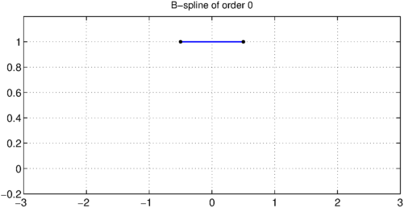
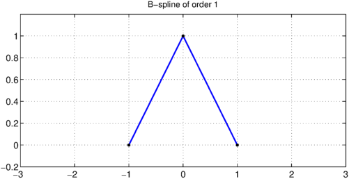
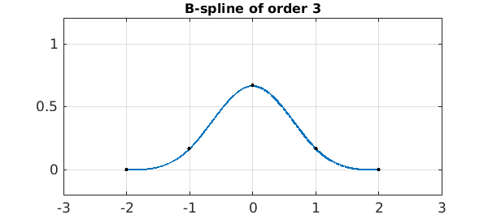
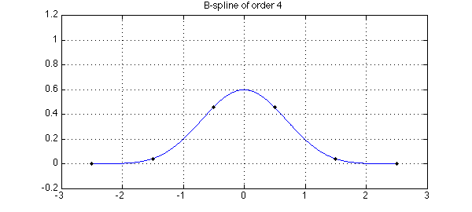

LW = 'linewidth'; lw = 1.6; MS = 'markersize'; ms = 12; FS = 'fontsize'; fs = 12;
Here is the characteristic function on the interval $[-1/2,1/2]$:
x = chebfun('x',[-0.5 0.5]);
B0 = 1+0*x;
ax = [-3 3 -.2 1.2];
hold off, plot(B0,LW,lw), axis(ax), grid on
pts = [-.5 .5];
hold on, plot(pts,B0(pts,'left'),'.k',MS,ms)
plot(pts,B0(pts,'right'),'.k',MS,ms)
title('B-spline of order 0',FS,fs)

If we convolve B0 with itself, we get a hat function:
B1 = conv(B0,B0);
hold off, plot(B1,LW,lw), axis(ax), grid on
pts = [pts-.5 max(pts)+.5];
hold on, plot(pts,B1(pts),'.k',MS,ms)
title('B-spline of order 1',FS,fs)

Convolving this result with B0 gives us a $C^1$ function, piecewise parabolic:
B2 = conv(B0,B1);
hold off, plot(B2,LW,lw), axis(ax), grid on
pts = [pts-.5 max(pts)+.5];
hold on, plot(pts,B2(pts),'.k',MS,ms)
title('B-spline of order 2',FS,fs)

As the titles of the plots indicate, these functions are known as B-splines. In our notation the B-spline $B_n$ is a $C^{n-1}$ piecewise polynomial of degree $n$ with support $[-(n+1)/2,(n+1)/2]$ and breakpoints uniformly spaced with separation $1$ this interval. The B-splines form a good basis for numerical computation with splines. Here is B3:
B3 = conv(B0,B2);
hold off, plot(B3,LW,lw), axis(ax), grid on
pts = [pts-.5 max(pts)+.5];
hold on, plot(pts,B3(pts),'.k',MS,ms)
title('B-spline of order 3',FS,fs)

And here is B4:
B4 = conv(B0,B3);
hold off, plot(B4,LW,lw), axis(ax), grid on
pts = [pts-.5 max(pts)+.5];
hold on, plot(pts,B4(pts),'.k',MS,ms)
title('B-spline of order 4',FS,fs)

B-splines were introduced by Schoenberg and became a standard method for numerical computation following the work of de Boor [1] and Cox [2] in 1972. In general there is no need for the breakpoints to be uniformly spaced. With uniformly spaced points as in our example, however, the shape approaches a Gaussian as $n\to\infty$. One could derive this fact by noting that in Fourier space, each convolution is a multiplication by the Fourier transform of $B_0$, namely a sinc function. This is the same computation that arises in the proof of the Central Limit Theorem, and in fact, the B-splines have a probabilistic interpretation: if $B_0$ represents a random variable with uniform distribution on the interval $[-1/2,1/2]$ then $B_1$ is the distribution for the sum of two independent samples from $B_0$, $B_2$ is the distribution for the sum of three samples from $B_0$, and so on.
References
-
C. de Boor, On calculating with B-splines, Journal of Approximation Theory, 6 (1972), 50-62.
-
M. Cox, The numerical evaluation of B-splines, Journal of the Institute of Mathematics and its Applications, 10 (1972), 134-149.